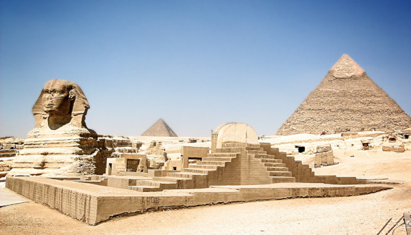
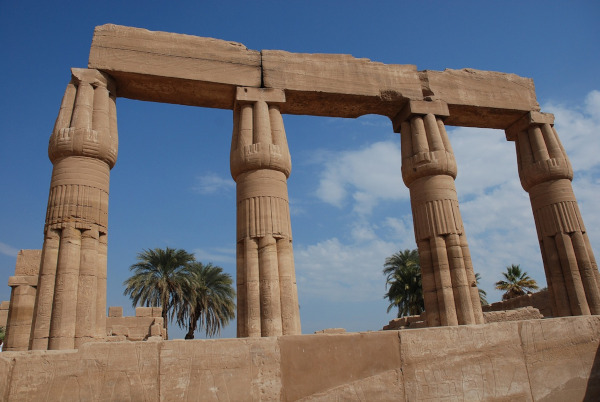
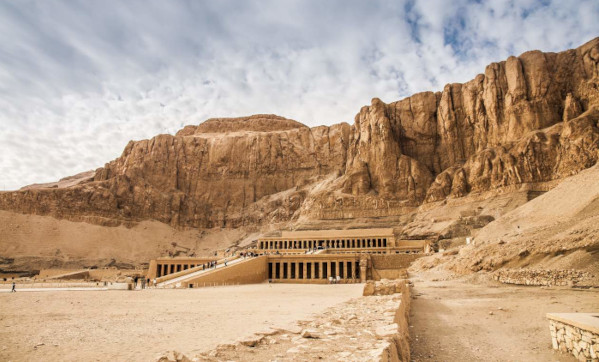
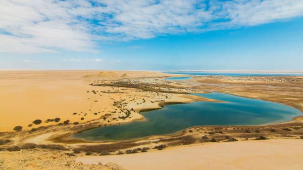

Egito: O Berço da Civilização Antiga
Viajar para o Egito é uma experiência incrível, repleta de história, cultura e maravilhas naturais. Aqui estão algumas dicas de viagem para ajudá-lo a aproveitar ao máximo sua visita ao Egito:
Documentação necessária
Para ingressar no Egito, brasileiros precisam apresentar passaporte válido, com vigência mínima de 6 meses e o visto.
O visto será feito no desembarque, dentro do próprio aeroporto, antes de passar pela imigração. Você paga 25 dólares e recebe o visto no passaporte. Leve o valor trocado, precisa ser em dólar.
Vacina de febre amarela também é necessária, mediante apresentação de CIVP – Carteira Internacional de Vacinação e Profilaxia contra febre amarela.
Clima e Melhor época para Viajar
Clima: O Egito tem duas estações principais: um verão quente e seco de maio a outubro e um inverno ameno de novembro a abril. Os meses de verão podem ser abrasadores, com temperaturas que chegam até 40°C, tornando-o menos do que ideal para atividades ao ar livre.
Entretanto, é o momento perfeito para visitar o Egito se você estiver procurando menos multidões e preços mais baixos, especialmente nos destinos turísticos populares como Cairo e Luxor. Em contraste, os meses de inverno são mais frios, mais agradáveis e perfeitos para passeios turísticos.
Melhor Época: A melhor época para visitar o Egito para fazer turismo é durante os meses de inverno, de novembro a abril. O clima é mais frio e as multidões são mais finas, facilitando a exploração das atrações históricas como as Pirâmides de Gizé, o Vale dos Reis e os templos de Luxor.
Os meses de novembro e dezembro são particularmente ótimos para turismo, pois o clima é ameno, e as multidões ainda não chegaram.
Moeda
A moeda no Egito é a libra egípcia. 1 libra egípcia é igual a 0,26 real brasileiro. Considerando que o real é mais valorizado do que a moeda local, o Egito está nas listas de países baratos para viajar.
Idioma
O idioma oficial do Egito é o árabe. Nos hotéis você pode se comunicar em inglês, bem como nos restaurantes. Fora isso, provavelmente você estará na companhia do guia, e a notícia boa é que tem uma quantidade considerável de guias no Egito que falam português.
4 Pontos turísticos imperdíveis para conhecer no Egito
1. Pirâmides de Gizé e a Grande Esfinge

Fonte: Pixabay
As Pirâmides de Gizé são um dos tesouros mais icônicos da humanidade. Elas foram construídas como túmulos para os faraós e são consideradas uma das Sete Maravilhas do Mundo Antigo. A Grande Pirâmide de Quéops (a maior das três pirâmides), a Pirâmide de Quéfren (a segunda maior das três pirâmides) e a Pirâmide de Miquerinos são verdadeiras maravilhas arquitetônicas.
A Grande Esfinge é uma estátua colossal que está localizada próxima às Pirâmides de Gizé. Ela representa um leão com a cabeça de um faraó, é igualmente impressionante e vale muito a pena ser visitada
Pra entrar no complexo das Pirâmides de Gizé você precisa comprar um ingresso e, se quiser entrar dentro da Pirâmides de Quéops e Quéfren, você precisa pagar por um ingresso extra além do ingresso do complexo.
2. Templos de Luxor e Karnak

Fonte: Pixabay
Os templos de Luxor e Karnak são impressionantes exemplos da arquitetura egípcia antiga e fazem parte do Patrimônio Mundial da UNESCO. Ambos estão localizados na cidade de Luxor, antiga Tebas, no Vale do Nilo. Cada um desses templos tem sua própria história e características únicas.
Uma das características mais impressionantes do Templo de Luxor é a Avenida das Esfinges, uma longa avenida ladeada por esfinges que conecta o Templo de Luxor ao Templo de Karnak. Os faraós construíram essa avenida para celebrar a jornada anual da estátua de Amon-Rá de Karnak para Luxor durante o festival de Opet.
O Templo de Karnak é um dos maiores complexos religiosos já construídos. O complexo inclui uma série de templos, pátios, obeliscos, dezenas de colunas e estátuas impressionantes. O templo desempenhou um papel central na religião egípcia e era o local de importantes cerimônias religiosas e festivais.
3. Vale dos Reis

O Vale dos Reis foi o local escolhido pelos faraós do Novo Império para construir suas tumbas. Eles acreditavam que a localização isolada e o terreno montanhoso ajudariam a proteger suas tumbas dos saqueadores.
Muitas tumbas no Vale dos Reis foram ricamente decoradas com pinturas murais e hieróglifos que descreviam a vida do faraó, suas realizações e suas expectativas na vida após a morte. É possível ver essas escrituras nas suas cores originais ainda hoje.
O túmulo mais famoso do Vale dos Reis é o de Tutancâmon, que foi descoberto em 1922 pelo arqueólogo britânico Howard Carter. O túmulo estava praticamente intacto e continha uma riqueza de artefatos, incluindo o sarcófago de ouro maciço do jovem faraó.
O Vale dos Reis é importante não apenas por sua riqueza arqueológica, mas também por seu papel na compreensão da história egípcia. As tumbas revelaram informações valiosas sobre a religião, a sociedade e a cultura do Antigo Egito.
O Vale dos Reis é protegido como Patrimônio Mundial da UNESCO, e medidas rigorosas de conservação foram implementadas para preservar o local histórico e suas tumbas.
4. Oásis de Fayoum

Outro lugar imperdível pra conhecer no Egito é o Oásis de Fayoum, que é uma região localizada a cerca de 100 quilômetros a sudoeste do Cairo, na depressão de Fayoum. É uma das mais antigas áreas habitadas do Egito e possui uma rica história e importância arqueológica.
A história do Oásis de Fayoum remonta a tempos antigos, com evidências de assentamentos que datam de milhares de anos. A região também possui sítios arqueológicos significativos, como as Pirâmides de Hawara e a cidade submersa de Dionísias.
Além disso, o Deserto do Saara, que hoje é uma vasta extensão de areia e rocha, já foi um ambiente muito diferente no passado. Há milhões de anos, durante o período Eoceno (cerca de 56 a 34 milhões de anos atrás), essa área era coberta por um oceano raso.